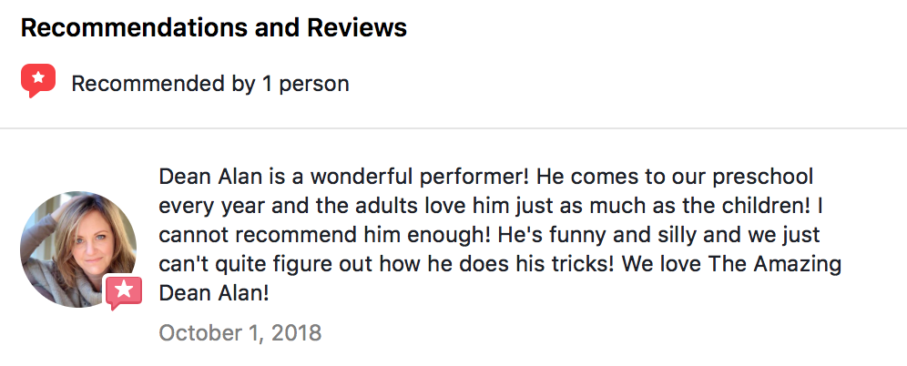
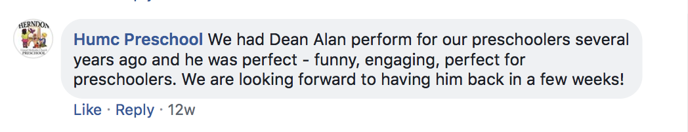

Reviews
“Dean Alan, was phenomenal! The interaction with the students was magical! Our K-5 students were mesmerized and their parents loved it! He even personalized it for us by including a book that our families had just finished reading at home!!!! He touched us all by sharing his own childhood struggle with reading. He is magical for all ages!”
Rebecca Worrell, Reading Specialist, Carrsville Elementary


“I just wanted to tell you that we thoroughly enjoyed the show, the children really enjoyed it and I got a chance to walk around to the classroom and see. You know since they can’t be in a big group together just to see how they interacted with the show and they were all participating and having fun.The teachers were really impressed how they loved it. We thought it was really great how you got the kids all excited about telling them about the next show so they’re excited about that too. Anyway I just want to thank you again for being for being willing to do this for us, it was a big huge success everyone is just like I said just really truly enjoyed it and um we’re looking forward to the next show.”
https://deanalanmagic.com/wp-content/uploads/2020/11/VeronicaMayesTestimonial.mp3Veronica Mayes, Director, St. Stephen’s UMC Prek, Burke, VA
“We love Dean’s magic show! He is always so wonderful with the kids. We always have him at our center!”
Alex Thomas, Director, The Academy of Mt. Juliet
Thank you! You were terrific! The kids and the adults (who are really kids at heart) loved your show!
M. Clute Director of Parent Relations & Special Events, Langley School
“You were wonderful! We were very impressed! “
Cubscout Pack 704 Leesburg, VA
“Thank you so much for coming to our school today! The students, parents, and teachers really enjoyed your program. We were all impressed with your ability to keep our kids engaged!”
Connie Bryant, Reading Specialist, Christiansburg Primary
“I thought Dean Alan was absolutely appropriate and fun! I watched the kids expressions and they were so into him! It was one of the best programs I’ve seen in my 21 years teaching in Fairfax County.”
Cindy Savio, Teacher, Cameron Elementary, Alexandria VA
“The feedback from your show was great…Thank you for a wonderful show!”
J. Sharples, British Embassy, Washington D.C.
Your performance was outstanding!
Pack 958 Leesburg, VA
“Thanks for another GREAT show! We are so glad you visited us today”
Kathy O, Kindercare - Alexandria
“The fine entertainment you so ably provided, made our event exciting and successful”
Debra Romash, White House Visitors Office
“Thanks so much for an excellent show (I’m still hearing positive comments!)”
Cheryl Redman, Reading Coach, Norton Elementary, Norton, VA
“Our kids LOVE when you visit the school. You’re their favorite performer!”
Ms. Gail, LaPetite Academy, Fredericksburg
“YOU are the best! You have only to laugh and I laugh right along with you. Thank you for many happy years!”
Kathy Tom, Principal, Merit School, Woodbridge
“The magic shows are outstanding! The way he captures the audience’s attention from the start to finish is truly amazing. I recommend his shows to everyone and I look forward to having him back at Locust Shade Amphitheatre!”
Chad Tyrell, Manager, Locust Shade Park -Amphitheatre, Triangle, VA
“We were so thrilled to have your show featured during the summer. I wasn’t quite sure what to expect but your performance was absolutely incredible! How did you do that? I have only seen that kind of magic on TV, never live and in person. You really put on a great show!”
Sergio Solares, Town Center Cinema Theatres